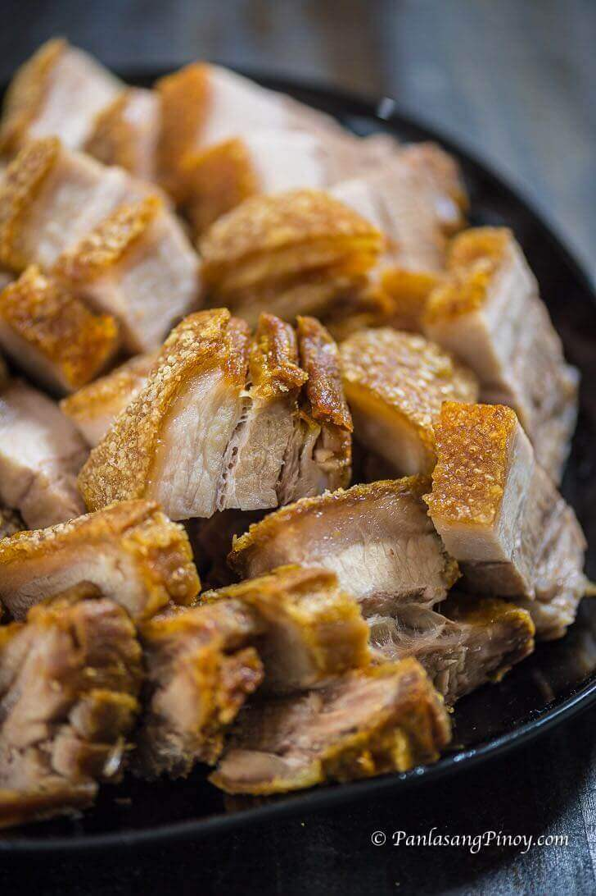

Super Crispy Lechon Kawali

How To Cook Super Crispy Lechon Kawali
Lechon Kawali is the ultimate indulgence for crispy pork lovers. This dish takes tender pork belly, deep-fries it to golden perfection, and delivers a mouthwatering crunch with every bite. Whether it’s served with a side of steamed rice, spicy vinegar, or liver sauce, lechon kawali never fails to satisfy cravings for something rich and savory.
Its appeal lies in its simplicity: crispy skin, juicy meat, and bold flavors that capture the essence of Filipino comfort food. Whether it’s for a special occasion or an ordinary lunch, lechon kawali is a dish you won’t forget—and one you’ll surely enjoy down to the last crispy piece.
Ingredients (for 2 people)
- 1.2 lbs. pork belly
- 2 pieces dried bay leaves
- 0.6 tablespoons whole pepperoni
- 1.2 pints water
- 0.8 pints cooking oil
- 0.4 tablespoon salt
Steps
- Boil water in a cooking pot.
- Add dried bay leaves and whole peppercorn. Cook for 2 minutes.
- Add pork belly. Cover and cook in medium heat for 30 minutes or until tender. Turn the meat over (if necessary) to equally cook the opposite side.
- Remove the pork belly from the cooking pot. Place it in a clean plate. Let it cool down until you can safely handle it with your hands.
- Rub salt all over the pork. Let it stay for 15 minutes.
- Heat oil in a deep cooking pot. Once the oil gets hot (320F to 350F), put the boiled pork belly in skin side facing down. Deep fry until the skin turns brown. Note: there is no definite time for this step. Use the sound of the oil as your queue. When the oil starts to calm down a bit, check the pork belly to see if the skin is brown.
- Turn the pork belly over and deep fry the opposite side for 5 minutes.
- Remove the entire pork belly slab from the cooking pot. Place it in a plate with grates or lined with paper towel. Let it rest for 10 to 15 minutes. Note: turn off the stove during this time.
- Turn on the stove to heat the oil. Once the oil is hot enough, put the pork belly back into the pot skin side facing down. Deep fry for 3 to 6 minutes or until golden brown.
- Remove from the cooking pot. Put on a plate and let the excess oil drip.
- Test for crispiness by hitting the crackling (crispy skin) lightly with a fork or knife. It should create a sound. Chop the super crispy lechon kawali into bite-sized pieces.
- Transfer to a serving plate. Serve with your favorite dipping sauce and a cup of warm rice.
- Share and enjoy!
Home